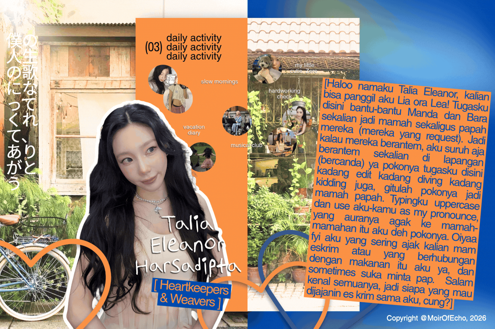

The Memoirs

List Kesukaan
Mamah:
- She finds happiness in simple things, like having mam yupi or enjoying a scoop of ice cream.
- Music is a part of her soul.
- She also enjoys playing games.
- She keeps a little note filled with memories. Whenever she misses those moments, she opens it and reads through them again.
- She believes life is full of good things, even in the smallest and simplest moments.